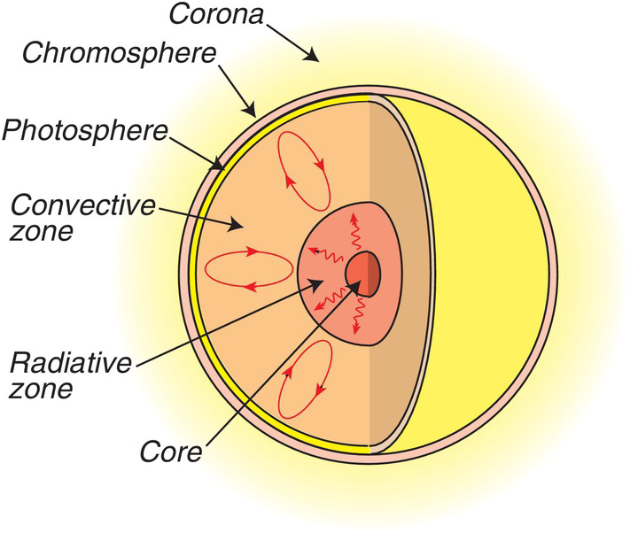
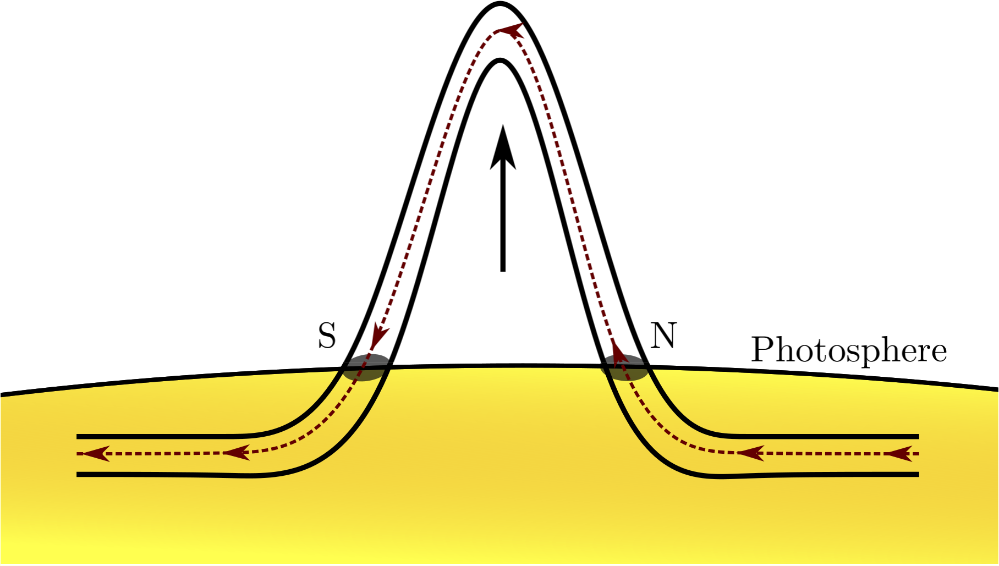
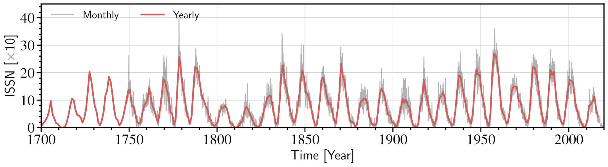
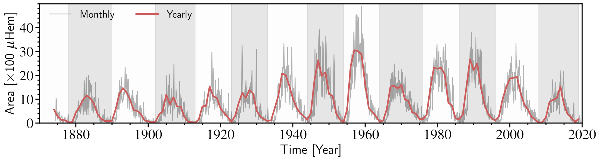
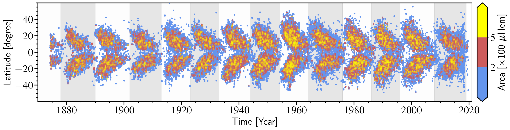
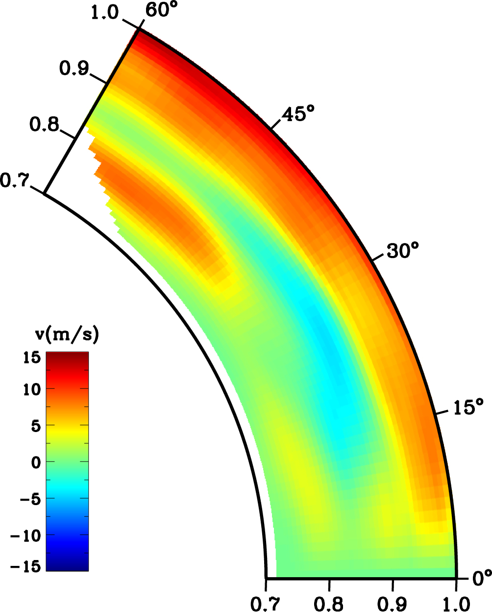
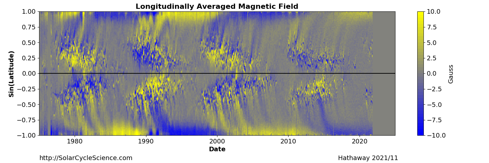
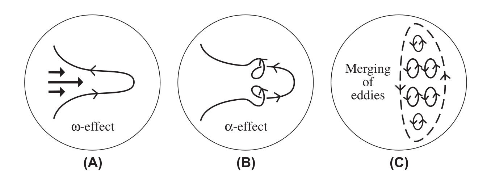
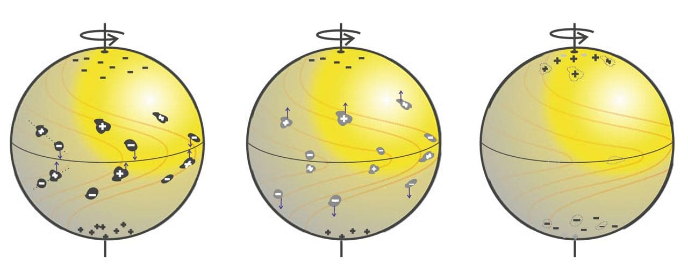

1 Introduction
“The purpose of life is the investigation of the Sun, the Moon, and the heavens.”
–Anaxagoras
The Sun, our backyard star, is far more fascinating than it may appear in its first impression. Most of us believe it to be uninteresting because it is just an ordinary star among the billions of stars that we see in the night sky. However, the question is, if it is such a typical star, what makes it so fascinating? The brief answer is that it is the closest star to our home, i.e., the Earth, and it is the primary source of energy for the survival of living beings on this blue planet. The dependency of our life on this star for energy makes it necessary to study and at the same time exciting to know the future of this ordinary star. When we hear or see the word “Sun”, the first thing that pops up in our mind is a yellow star that rises in the East and sets in the West every day. Even though the Sun looks the same in the sky every day, but the importance of this yellow star did not remain hidden for long, and the curious minds started realizing it very early. Starting from the mythological story to the scientific quest, we have expanded our horizons beyond the limit to understand the Sun. Being the closest star to us provides an excellent opportunity to study it with enormous details. Moreover, it also serve as a laboratory for stellar physics to test their hypotheses and models. Throughout this thesis, we will try to get an even more comprehensive answer to what makes the Sun even more exciting.
The study of the Sun is broadly classified into two classes, the short-term, where one studies the changes in Sun happening with the time scale of seconds to days, and the long-term, where the changes happening in the Sun over the years is studied. This thesis aims to understand the long-term behaviour of the Sun and how it can help our understanding of physics underneath. In this thesis, I will use the historical archival data as obtained from the Kodaikanal Solar Observatory (KoSO) and others, along with space-based data from Solar and Heliospheric Observatory (SOHO) and Solar Dynamic Observatory (SDO). Before I explain the details, let me start with our fundamental understanding of the Sun.
1.1 The Sun
The Sun is young but around five billion-year-old, residing at around 150 Mkm from us. It has a mass of \(\approx2\times10^{30}\) kg and is primarily made up of Hydrogen (\(\approx74.9\%\)), Helium (\(\approx23.8\%\)) and some other metals (Asplund et al. 2009). It is a GII V star burning hydrogen in its core via nuclear fusion, and the energy produced in this process provides support against its gravity. The structure of the Sun is broadly classified into two classes (i) internal structure and (ii) solar atmosphere. I am going to discuss these two classes briefly in the following subsections.

1.1.1 Internal Structure
Being a black body makes the internal structure of the Sun invisible to all the wavelengths, and it was almost impossible to peep inside the Sun. The advent of a technique called helioseismology (Christensen-Dalsgaard 2002) gives us an opportunity to indirectly look inside the Sun to confirm its internal structures known from the standard models (Stix 2012), which comprises of:
Core: This is the powerhouse of the Sun, which spans around \(\approx\)20% its radius. This is the place where He, along with photons and neutrinos, are produced in p-p chain reaction. In this region of the Sun, temperature varies from \(\approx\)15 MK at its centre to \(\approx\)10 MK at its edge. The energy produced in this reaction not only provides support against gravity but also gives the energy that we receive on the Earth.
Radiative Zone: The layer next to the core, which extends from 0.2 to 0.7 , where radiation is the energy transport mechanism, is called the radiative zone. The gamma photons produced in the p-p reaction have to go through a random walk in this layer, and when it comes out of the Sun, it comes out as black body radiation peaking in the visible band. It takes around \(1.7\times 10^5\) years for a photon to come out of the Sun and only around 8 minutes to reach us.
Tachocline: In helioseismology observations, a very thin layer of around 4% of the solar radius, at 0.7 , has been discovered, which is called Tachocline (Charbonneau et al. 1999). In this region as we move from radiative zone to convection zone, the rotation profile of the Sun changes from almost solid body to differential. Now, it is believed that the rapid change in the rotation could possibly has important implication to solar dynamo for the generation of a large scale magnetic field in the Sun (Miesch 2005), see Wright (2016) for the more discussion about this layer.
Convection Zone: This is the region of Sun above 0.7 and extends up to the visible surface. Here, the temperature is such that the electrons and nuclei start forming ions, leading to increased opacity and sufficient temperature gradient to start the convection. Here, the energy is transported via mass motion, which can be seen on the visible surface as granules.
1.1.2 Solar Atmosphere
The modern space-based instruments, on-board SOHO, SDO etc., have taken our capability to look at the Sun like never before. They enabled us to image the different layers of the solar atmosphere by observing the Sun in many wavelengths most of which are impossible to observe from the ground-based instruments. These atmospheric layers are discussed below:
Photosphere: It is the visible surface of the Sun (1.2a) and plays the role of the boundary between the solar interior and atmosphere. We notice a significant change in density in this region, making the solar plasma opaque to transparent. The temperature of this layer is around 5778 K; hence, plasma is weakly ionized here.
Chromosphere: It is derived from the Greek word meaning ” sphere of colour” because of its colourful appearance during the total solar eclipse. In this region, temperature initially falls for around 500 km and then starts increasing as the distance from the Sun increases. Even though this region of the solar atmosphere is primarily transparent in the visible band, it can be still observed in the H-alpha and He II lines. The 1.2b show the image of Sun observed He II line by SDO/AIA.
Transition Region: This is an extremely thin region at the boundary of the chromosphere and corona. This region of the solar atmosphere has a large temperature gradient from thousands to million kelvin in a very short distance. 1.2c show the upper transition region as observed in AIA 171 Å.
Corona: This is the outermost region of the Sun, which extend from the transition region to the interplanetary medium. This region of the Sun can only be naturally seen during the total solar eclipse because of its extremely low intensity compared to the photospheric intensity. The advancement of instruments has enabled us to observe it even without the total solar eclipse, 1.2d is one such example (AIA 94 Å). The extreme temperature, varying from a million kelvin to 10 MK, makes this region very interesting. The reason behind this unusual high temperature is still one of the outstanding problems of solar physics and known as the Coronal Heating problem. Apart from that, a frequent change in the magnetic topology makes this region very dynamic.
Now, since we got an idea about the atmospheric layer of the Sun, it’s time to talk about different features such as sunspots, active regions, plages, filaments, prominences etc., which are seen in these layers. The outstanding fact about these features is that they carry a lot of information about the physical conditions where they originate, and hence, the Sun. Therefore, by observing these features, one can enrich the understanding of the Sun, and the development of modern instruments has pushed our observing capability even further. One of the most prolonged observed solar features is the sunspots which have a significant place in this thesis and will be discussed in detail.
1.2 Sunspot: Observers’ Perspective
On the visible surface of the Sun, the photosphere, sometime we see a few dark spots (1.3) which are called sunspots. It has been reported that the Chinese were the ones who first recorded these spots (Clark and Stephenson 1978; Wittmann and Xu 1987), but the regular observation of these dark spots only started at the beginning of the 17th century by Galilee Galileo and Christoph Scheiner, just after Galileo’s advent of the telescope. Even though the systematic observation of sunspots started so early, their physical nature was hidden to us till 1908. Hale (1908), while working at Mount Wilson Observatory, by studying the Zeeman splitting of a spectral line (Zeeman 1896), discovered that these sunspots are the regions of the strong and concentrated magnetic field (see 1.5) with a typical field strength of \(\sim 10^3\) G, which can go up to 2000–3700 G (Sami K. Solanki 2003). This is the first time the magnetic field was observed outside the Earth. The presence of a strong magnetic field suppress the convection which leads to the inefficient transfer of heat to the photosphere (Biermann 1941). The undersupply of heat result in lower temperature (\(\approx 4500\) K) in sunspots relative to their surrounding (\(5778\) K) and hence, they appear dark in the visible band.
Sunspots as seen in the visible band (white light images) show a wide range in their morphology, size (area on disk), lifetime etc., going to be discussed briefly.
1.2.1 Morphology of Sunspots
Sunspots are formed isolated (1.4a) as well as in the groups (sunspot group; 1.4b), consists of many sunspots. Most of the time, a typical sunspot has a two-part structure, a central darker region called umbra surrounded by a region lighter than umbra but darker than photosphere is called penumbra (shown in 1.4). The spot that lacks penumbra is referred as the pores and believe to be the initial stage of sunspot formation (see Sobotka et al. 1999 and references therein). Sunspots show a wide range of shape and size; hence, based on their morphology, they are classified into different categories such as A (uni-polar with no penumbra), B (bipolar without penumbra) etc., (P. S. McIntosh 1990; P. McIntosh 2000 and references therein). After the 70s, the magnetic field measurement of the Sun led to another classification scheme known as Mount Wilson Magnetic classification scheme (Smith and Howard 1968) based on their magnetic complexity, e.g. \(\alpha\), \(\beta\), \(\delta\) etc.
1.2.2 Size of Sunspots
Sunspots show a broad spectrum in their sizes, starting from a few thousand km to 60,000 km and even more (Sami K. Solanki 2003). Sometimes, they could be so big that they can be seen with naked eyes provided the favourable weather condition. The distribution of sunspot area shows a log normal distribution which implies that the smaller sunspots are more common than, the larger ones. This observation was first reported by Bogdan et al. (1988) based on the sunspot observation at Mt. Wilson Observatory.
The two-part structure of sunspots also encouraged to measure the ratio of penumbra to umbra area, and plenty of effort has been done to look at this ratio (Antalová 1971; D. H. Hathaway 2013; Jha, Mandal, and Banerjee 2018, 2019). These studies show that the ratio increases initially with the size of the sunspot, i.e., the whole sunspot area. A detailed discussion on this ratio will be presented in [Chap3].
1.2.3 Lifetime of Sunspots
Similar to the sizes, sunspots also show a large variation in their lifetime, it can vary from a few hours to months. Statistically, the lifetime of a sunspot show linear dependence on its maximum size (Gnevyshev 1938; M. Waldmeier 1955). The relation is given by \[\begin{equation} a_{\rm max} = W\tau, \label{eq1.25} \end{equation}\] where \(a_0\) and \(\tau\) are the maximum areas and lifetime of the sunspot and, \(W\) is proportionality constant having value \(10~\mu\)Hem/day (\(\mu\)Hem is millionth of the solar hemisphere). The value of \(W\) has been further updated to \(W=10.89\pm0.18~\mu\)Hem/day (K. Petrovay and van Driel-Gesztelyi 1997).
1.2.4 Bipolar Magnetic Region
Hale’s discovery of magnetic field in the sunspots (Hale 1908) also reveals that a group of sunspots are actually the regions of opposite magnetic polarities residing very close to each other (see 1.5). Due to this reason, they are called Bipolar Magnetic Region (BMR), which is a more general feature of sunspots. The two polarities if these BMRs are named as leading and following polarities based on their movement on the visible disk. Since the Sun is rotating from East to West, it appears that one polarity of BMR is following the other. Hence, the polarity (spot) towards the West is leading, and the one towards the East is following polarity.
The careful observation of these BMRs reveals that all BMRs in one hemisphere have the same orientation (with few exceptions), and this orientation is opposite in another hemisphere (Hale et al. 1919). This interesting characteristic of BMRs is called “Hale’s Polarity Law” after Hale et al. (1919). Furthermore, he also discovered that the leading and the following spots reverse their sign in each cycle as shown in 1.6. But sometimes, we also notice that a few BMRs do not obey the Hale’s polarity law and are hence called “Anti Hale Sunspots”. Even though such BMRs are very few, they play a crucial role in our understanding of the Sun and solar cycle models (B. B. Karak and Miesch 2017, 2018) to be discussed later.
Now, the question arises, how are these BMRs or sunspots formed? To understand that, let us consider a bundle of magnetic field lines which constitute a flux-tube. Now, due to the presence of a magnetic field in the flux tube, there will be an additional pressure inside called magnetic pressure (\(P_{\rm mag}\)) along with gas pressure (\(P_{\rm gas}\)), which must be balanced by only gas pressure (\(P_{\rm gas}\)) outside. Hence, in equilibrium, \[\begin{align} P^{\rm out}=& P^{\rm in} \nonumber\\ P_{\rm gas}^{\rm out}=&P_{\rm gas}^{\rm in}+P_{\rm mag}^{\rm in}, ~~~\because~~P_{\rm mag}^{\rm in}=\frac{B^2}{8\pi}\nonumber\\ \therefore~~P_{\rm gas}^{\rm out} > &P_{\rm gas}^{\rm in}; \end{align}\] which is not always but usually leads to, \[\begin{equation} \rho^{\rm in}<\rho^{\rm out}. \end{equation}\] Lower density inside the flux tube will make it buoyant (Parker 1955a), and hence it will come out of the photosphere and appear as a BMR (shown in 1.7).

1.2.5 Tilt of Bipolar Magnetic Region
A careful examination of the BMRs (or sunspot group) show that the line joining the centre of leading and following polarity, is tilted with respect the solar East–West direction, as shown in cartoon diagram (1.8a) and in magnetogram data (1.8b). This is called tilt (\(\gamma\)) of BMR, and it systematically increases with the latitude of the BMR in both hemispheres (Hale et al. 1919). The relation between tilt (\(\gamma\)) and co-latitude (\(\theta\)) is called Joy’s law and given as: \[\begin{equation} \gamma = \gamma_0\cos{\theta} \label{eq1.2} \end{equation}\] where, \(\gamma_0\) is a constant and called amplitude of Joy’s law.
The tilt of BMR is induced by the effect of Coriolis force acting during the rise of flux tube due to the rotation of the Sun. The Coriolis force acting on the rising loop apexes has opposite direction and will try to twist it, bringing one polarity closer to the equator and the other away from it (D’Silva and Choudhuri 1993). The systematic tilt observed in BMRs give rise to net dipole moment, which have a significant impact on the flux transport dynamo models (going to be discussed in the upcoming section), particularly in Babcock-Leighton type dynamo models (H. W. Babcock 1961; R. B. Leighton 1964; Charbonneau 2010).
The theoretical work of D’Silva and Choudhuri (1993) which explain the observed tilt in the BMRs and its dependency on the latitude, hence unfold the physics behind Joy’s Law. In their work, D’Silva and Choudhuri (1993) have also elaborated the role of the strength of the magnetic field, flux for the observed tilt of BMRs.
1.3 Solar Activity Cycle
The discovery of sunspot has significant influence on the observers around the globe and prompt the systematic observation of these dark spots. Even though Christian Horrebow gave the first indication of variation in the appearance of these spots but it was not really discovered until 1844 when Heinrich Schwabe (Schwabe 1844) reported the existence of \(\approx 10\) years periodicity in the number of appearance of these spots. This turns out to be the discovery of solar activity cycle or solar cycle. The discovery of the solar cycle has changed our perspective about the Sun, and astronomers started turning their telescopes towards it. Sunspots show a large variation in their shape and size, and hence an obvious question raised is that how quantify it. Here I discuss a few of them that are widely used as measures for solar activity.
1.3.1 Sunspot Number
Encouraged by the discovery of the solar cycle by Schwabe, Rudolf Wolf, working at Bern Observatory, initiated the regular observation of these spots. He also devised the way to calculate the number of sunspots on the solar disk, called “relative sunspot number (R)” or “International Sunspot Number (ISN)” or “Zurich Number”, defined as \[\begin{equation} R=k(10g+n) \label{eq1.1} \end{equation}\] where \(k\) is the correction factor, \(g\) is the number of groups and, n is the number of isolated sunspots. If we look carefully at the [eq1.1], we notice that it gives higher priority to the groups which is because they are easy to identify on the solar disk. Later in 1981, the Belgium Observatory also started the regular observation of sunspots which continued till date, and these data are freely available to the community via the Solar Influences Data Analysis Center (SIDC)1. Today, the international sunspot number has been treated as one of the best proxies for solar activity; it is not because everyone agrees to it, but because of its availability. 1.9 shows the variation of monthly and yearly sunspot numbers taken from WDC-SILSO. ISN is the one, which is mainly used in the community as the best proxy for solar activity, there are few others, such as sunspot area, 10.7 cm Solar Flux (Tapping and Charrois 1994), etc., that have been also regularly used for the same.

1.3.2 Sunspot Area
It is advocated that the area covered by the sunspots have greater physical significance than the sunspot number. Therefore, in 1874, Royal Observatory, Greenwich (RGO) started compiling the sunspot area and its position on the disk from the photographic plates. These plates were collected from different observatories around the globe, including Kodaikanal Solar Observatory, India. RGO continued reporting the sunspot area till 1976, and then Debrecen Observatory (Győri, Baranyi, and Ludmány 2010; Baranyi, Győri, and Ludmány 2016) joined the campaign and started updating the area series. Realising the importance of this series, recently Sudip Mandal et al. (2020) has cross-calibrated the sunspot area data taken from different observatory. The cross-calibrated monthly, and yearly, sunspot area data from RGO and NOAA is shown in 1.10.

In India, Kodaikanla Solar Observatory (KoSO) has also started the regular observation of the Sun from the beginning of 20th century and the area time series from the digitized data have been reported in Ravindra et al. (2013) and (S. Mandal et al. 2017).
1.3.3 Other Proxies
Apart from ISN and Sunspot Area there are multiple physical quantities such as 10.7 cm Solar Flux, Total Solar Irradiance, Geomagnetic Activity, Cosmic Ray Modulation and etc. that show a good correlation with the ISN (see David H. Hathaway 2015 and references therein for details). Here I discuss a few of them.
10.7 cm Solar Flux: Another measure of solar activity period is the disc integrated radio flux observed at 10.7 cm [2800 MHz; Tapping and Charrois (1994)]. Starting from 1946 Canadian Solar Radio Monitoring Program and then in 1990 new observation program at Penticton British Columbia regularly measures radio flux from the Sun. The radio flux measurements show a good correlation with the ISN (Holland and Vaughan 1984).
Total Irradiance: The total energy from the Sun integrated over all wavelengths per unit area per second outside the Earth’s atmosphere is called Total Solar Irradiance (TSI). The accurate measurement of TSI was not possible before the development of space-borne instruments such as Nimbus-7 (1978–1993), Solar Maximum Mission (SMM), ACRIM-I (1980–1989), Earth Radiation Budget Satelite (ERBS; 1984–1995) etc. This observation of the TSI suggests that it also varies with solar activity and shows a good correlation with ISN and, hence, a possible candidate for activity measurement (David H. Hathaway 2015 and references therein).
Cosmic Ray Modulation: A cosmic ray contains high energy (GeV) particles produced in violent cosmic phenomena. When a positively charged one reaches the Earth atmosphere, it makes a cascading shower of particles. These could be measured by monitoring neutrons, and the number of neutron particles shows anti-correlation with ISN. Parker (1965) explained that during high activity, these particles get scattered by the magnetic structure carried by the solar wind responsible for reduction in neutron number.
1.3.4 Characteristics of Solar Cycle
The consistent observation of the sunspots over many cycles uncovered so many solar cycle characteristics. Many of them are common, but still, a few show differences, making the sun even more interesting. A few aspects which will be frequently used in this thesis are discussed below.
Spoerer’s Law of Zones: The latitude time diagram of these spots show a beautiful pattern like butterfly (as seen in 1.10) and called “Butterfly Diagram” or “Spoerer’s Law of Zones’’ first reported by (E. W. Maunder 1903; E. Walter Maunder 1904). At the beginning of the solar cycle we observe the sunspots at higher latitude around \(30^\circ -35^\circ\) in both the hemisphere but as the cycle progress sunspots start appearing towards the equator (1.11).

A composite Latitude-Time diagram of sunspot position on the solar disk is known as the “Butterfly Diagram”. This plot is generated using cross-calibrated data reported in .
Cycle Maxima and Minima:The solar maxima and minima times play a crucial role in understanding the solar activity cycle. Getting an exact time of maxima and minima is a little tricky due to inherent noise in the data. It is necessary to smooth the ISN in some way to get the proper time of occurrence of maxima and minima. Currently, these times are calculated from the 13-month running average, centred at the month of interest, over monthly mean sunspot number data (Clette and Lefèvre 2016; David H. Hathaway 2015). This is similar to the method used earlier by Max Waldmeier (1961; McKinnon and Waldmeier 1987).
Cycle Period: Like any other periodic function, the solar cycle period is also defined as the time between two consecutive minima accompanying a maximum (sometimes more than one). In the case of the solar cycle, this definition has one issue, as each solar cycle starts a little earlier than the preceding minima and stays a little longer than the following maxima. Apart from that, the accuracy in the time calculation of minima also impacts the measurement of the activity period. Hence, the cycle period depends on the cycle of interest and the method used to determine it. Usually, the average cycle period is calculated as the time difference between two minima divided by the cycles it includes. Based on that, the average cycle period is around 131.7 months which is \(\approx\) 11 years (David H. Hathaway 2015 and references therein).
Cycle Amplitude or Strength: The solar cycle amplitude or strength is the maximum number of smoothed ISN or any other proxy. It has been noticed that the cycle’s amplitude depends on the proxy and method of smoothing used before determining it. Therefore, the amplitude of the solar cycle differ from each other when different proxies are used, e.g., Cycle-15 and 16 have similar amplitude when sunspot area is used as a proxy but differ significantly in the case of ISN (David H. Hathaway 2015 and references therein). This becomes even more complicated in the case of double peak cycles [e.g., Cycle-20 & 22; Bidya Binay Karak, Mandal, and Banerjee (2018)].
The Waldmeier Effect: Most of the time, the rise time of a solar cycle is shorter than the time it takes to reach maximum to minimum
- In addition, it has also been observed that the rise time of a cycle is anti-correlated with the amplitude of the cycle, and this effect is called “Waldmeir Effect” after 1 (M. Waldmeier 1939). The theoretical explanation for the observed effect was given by B. B. Karak and Choudhuri (2011).
1.4 Long–term Variability
Apart from the dominant 11 years solar activity cycle, the historical observation of the Sun also show long-term variation in solar activity (E. W. Maunder and Spoerer 1890; Eddy 1976; Hoyt and Schatten 1998; S. K. Solanki et al. 2004; Usoskin 2013). In 1.9 and 1.10, we see that all the cycles are not the same; they differ from each other in amplitude as well as period. This significant variation that we see in solar activity might play an essential role in understanding and predicting future cycles (Kristóf Petrovay 2020). There are a few major aspects of long-term variation of the solar cycle, which are discussed below.
1.4.1 The Maunder Minimum
In 1.12, during the period 1645 to 1715, we notice very little activity and this is called “The Maunder Minimum”. This curious behaviour of the Sun was first reported by (E. W. Maunder and Spoerer 1890) while compiling the work of Spoerer’s and later by Eddy (1976) with more observational support. Hoyt and Schatten (1998) reported the complete observation during this period depicting the drought of activity in that period. (Nesme-Ribes, Ferreira, and Mein 1993) results also indicated the presence of a weak magnetic field in this period. The other proxies for solar activity, such as \(^{10}\)Be (Beer, Tobias, and Weiss 1998) and \(^{14}\)C (Stuiver and Quay 1980) revels that the solar activity was so weak during that period it produced very small or no sunspots in the period. These observation also indicate the existence of many such extreme events in the history of Sun (Usoskin 2013), and it is still an open problem of solar physics.
1.4.2 The Secular Trend
Just after the Maunder Minimum, we notice the slight but steady increase in the solar cycle amplitude, which was earlier reported by Wilson (1988) and recently by Svalgaard (2012). David H. Hathaway, Wilson, and Reichmann (2002) also noted the positive correlation coefficient (0.7) between the amplitude and number of cycles. Furthermore, A recent result based on radioisotope shows many such upward and a downward trends in the solar activity period in the \(11,000\) years (S. K. Solanki et al. 2004). Although the trend is minimal, it might still significantly impact the understanding of the Sun.
1.4.3 Even–Odd Effect
There is an interesting characteristic of inter cycle variation of cycle amplitude called “Even–Odd rule” or “Gnevyshev–Ohl Rule” after its discovery by Gnevyshev and Ohl (1948). They found that the sum of the number of sunspots in even numbered cycle is lower than the odd numbered cycle, with few exceptions (see David H. Hathaway 2015, fig. 40). Our current understanding of the Sun cannot answer why such a pair exists at all? However, the observational support to this inter cycle property impacts our solar activity models (Sheeley 2005).
1.4.4 Other Long–term Trends
There are few others observed periodic variation in cycle amplitude such as a period of \(\approx9.1\)-cycles called “The Gleissberg Cycle” (Gleissberg 1939; David H. Hathaway 2015; Usoskin 2013), and \(\approx\)210 years, reported based on the radiocarbon studies often refered as the Suess or de Veies cycle (Suess 1980).
1.5 Large–scale Flows in the Sun
The observations of sunspots have not only helped us to understand the magnetic nature of the Sun but it has taken us even beyond that. One can infer that the Sun is rotating by looking at the position of sunspots on the visible disk. The methodical measurement of sunspots position on the visible disk has enabled us to measure the solar differential rotation. Based on these measurements, we know that there are two major large-scale flows in the Sun (i) differential rotation and (ii) meridional circulation, which I will discuss in the following sections.
1.5.1 Differential Rotation
In the past, historical observations of sunspots and other solar features have been utilized (as a tracer) so many times to measure the photospheric solar differential rotation (see a review by Beck 2000 and references therein). Based on these observation the solar differential rotation can be expressed as a function of co-latitude (\(\theta\)) \[\begin{equation} \Omega(\theta) = A+B\cos^2{\theta}+B\cos^4{\theta}, \label{eq1.3} \end{equation}\] where \(A\) is equatorial rotation rate and \(B\), and \(C\) are called latitudinal gradients (Beck 2000 and reference therein). The issue with this method is that we see very few or no features during the minimum activity period, hence making the measurement difficult. Therefore, another method, such as spectroscopy, is also used to measure the solar differential rotation (Robert Howard and Harvey 1970). A major breakthrough came in understanding solar differential rotation after the helioseismology era. Helioseismology uses the different modes of oscillation in the Sun to map the solar differential rotation profile to the surface as shown in 1.13a (from the 0.5 to ). Variation of latitudinally averaged rotation profile with solar radius is shown in 1.13b. In both the figure a sharp change in rotation profile is noticed at 0.7. The detail discussion about the solar differential rotation will be presented in [Chap4].
1.5.2 Meridional Circulation
Another aspect of large scale flow in the Sun is a flow confined in the meridional plane, a plane that passes through the rotation axis and perpendicular to the equatorial plane, called meridional circulation. Meridional circulation is the motion of plasma from the equator towards the pole (shown in 1.14) ; since we do not expect plasma to pile up near the pole, it must return to the equator at some depth below the solar surface, in both the hemisphere (Rajaguru and Antia 2015; Chen and Zhao 2017). It takes a little while to infer this motion in the Sun due to its very low magnitude [20 ms\(^{-1}\); Arnab Rai Choudhuri (2021)]. The meridional circulation is far weaker than the other motion on the surface, and that is the reason it is so difficult to measure. There is something very interesting about the meridional circulation; it transports various solar features with it to the pole, making it possible to infer at least. If we look at the magnetic butterfly diagram (1.16), we notice the poleward transport of magnetic flux, which is responsible for polarity reversal, is believed to be carried by meridional circulation (Charbonneau 2010; Arnab Rai Choudhuri 2021).

1.6 Global Magnetic Field
So far, I have only talked about the magnetic field in the sunspots i.e., the magnetic field only localized in some regions, now I will, talk about the global magnetic field of the Sun.
In the second half of the 20th century, the works of H. D. Babcock and Livingston (1958; Harold D. Babcock 1959) suggests that the polar field of the Sun reverses its polarity systematically every 11 years, and this polarity reversal happens during the time of maximum solar activity. After this discovery around a decade later, Wilcox Solar Observatory [WSO; Scherrer et al. (1977)] started to measure the polar field of the Sun regularly. This observation confirms the findings of H. D. Babcock and Livingston (1958; Harold D. Babcock 1959) and it also highlights that these polarity reversals do not need to occur at the same time in both the hemisphere-it might have delay of months to years. Another interesting fact about the polar field is its strength, which is of the order of a few Gauss contrary to the field measured in sunspots is of kilo Gauss (Hale 1908). The smoothed polar field is shown in 1.15 as measured at WSO.
In the early 1970s the Kitt Peak National Observatory (KPNO) started measuring line of Sight (LOS) magnetic field map (magnetogram) of the Sun. Later, National Solar Observatory [NSO- SOLIS; Keller and Nso Staff (1998)] with slightly better resolution joied the hands and started observing the full disk magnetogram. A substantial change happened after the development of space based instruments like Michelson Doppler Imager (MDI) on the Solar and Heliospheric Observatory [SOHO, 1996; Scherrer et al. (1995)], and Helioseismic and Magnetic Imager (HMI) on-board Solar Dynamic Observatory [SDO, 2010; Schou et al. (2012)]. In 1.16, we show the longitudinally averaged radial magnetic field of map of the Sun, which is called magnetic butterfly diagram, for the last four-cycle. We notice in the diagram that the butterfly wings are dominated by opposite polarities in the northern and southern hemispheres, near the equator and the pole, as expected based on Hale’s Polarity law. Moreover, we also observe that higher latitude field is transported to the pole, where they are eventually responsible for the polarity reversal during the maximum time (Mordvinov et al. 2022).

These observations of global solar activity not only reveal the cyclic nature of solar magnetism it also helps us to understand the change in magnetic field configuration during the solar cycle. During the minimum activity period, the magnetic field configuration of the Sun is like a bar magnet and called a poloidal field (1.17a); on the other hand, the field configuration is like a toroid in the plane parallel to the equator and called a toroidal field (1.17b). The poloidal field of a few Gauss is getting converted to the toroidal field and amplified to the order of kilo Gauss [as observed in the form of sunspots; A. R. Choudhuri (2003)], which is responsible for the generation of sunspots (). After that, the diffused magnetic flux is transported to the pole by meridional circulation, which is responsible for polarity reversal (1.16) and generation of poloidal field with opposite orientation (1.17b). The conversion of poloidal to toroidal and back to poloidal with opposite polarity takes around 11 years (solar cycle). In contrast, it takes around 22 years to get the same global magnetic field configuration, known as the magnetic cycle.
Now, it is essential to understand the physics behind all these observed behaviour of the Sun and here comes the solar dynamo theory which is discussed in .
1.7 Solar Dynamo
Hitherto, we have only discussed about the observation aspects of the Sun, the solar activity cycle, solar magnetism, and large-scale flows. This section will discuss the causes of the observed aspects of solar magnetism based on our current understanding of the solar dynamo, which is believe to operating in the convection zone of the Sun.
The “Solar Dynamo” is the mechanism that helps the Sun amplify and sustain its magnetic field. Joseph Larmer was the first person who came up with the idea about the inductive action of the fluid, and it turned out to be the foundation stone for the solar dynamo. In his idea, the axisymmetric solar differential rotation was an obvious choice responsible for amplification and conversion of poloidal (configuration of the magnetic field during solar minimum) field to toroidal field (configuration of the magnetic field during solar maximum). Moreover, it also nicely fit Hale’s polarity law (Hale et al. 1919). A major hurdle came into the path of this idea as Cowling’s anti-dynamo theorem (Cowling 1933). This theorem says that axisymmetric flows could not, in themselves, maintain the self-sustaining axisymmetric magnetic field, against the Ohmic dissipation (Cowling 1933; Charbonneau 2010). Parker (1955b) came with the idea that can bypass this problem. He pointed out that the Coriolis force will twist the rising fluid elements in the solar convection zone due to the rotation of the Sun and so break the axisymmetry. This groundbreaking idea led to the development of mean-field electrodynamics, the theory of solar dynamo modelling. Before I discuss the mean-field dynamo models, let’s briefly discuss the fundamental equations of magnetohydrodynamics (MHD), which is at the crust of solar dynamo models.
1.7.1 MHD Equations to Solar Dynamo
In a magnetised medium, there are four set of equations (eight scalar) that describe the complete dynamical system (Arnab Rai Choudhuri 1998). These equations are as follow and all the terms have their standard meaning (see Priest 2014 for details about these equation).
The most important equation of MHD, which talk about the inductive effect of the flow and called induction equation is given as, \[\begin{equation} %Induction Equation \frac{\pa\vb{B}}{\pa t}=\bm{\nabla}\times[\vb{v}\times\vb{B}-\lambda\bm{\nabla}\times\vb{B}]. \label{eq1.6} \end{equation}\]
The second in the list is called momentum equation and it talk about the conservation of momentum and written as, \[\begin{equation} % Momentum Equation \rho\frac{d\vb{v}}{dt}=-\bm{\nabla}p+\frac{1}{4\pi}(\bm{\nabla}\times\vb{B})\times \vb{B}+\vb{F}+\nu\bm{\nabla}^2\vb{v}. \label{eq1.5} \end{equation}\]
The third equation in the set is the continuity equation which describe the conservation of mass and given as, \[\begin{equation} % Continuity Equation \frac{d\rho}{dt}+ \rho\bm{\nabla}\cdot\vb{v}=0. \label{eq1.4} \end{equation}\]
The fourth and final equation in this set is the energy conservation equation, which is \[\begin{equation} %Energy Equation \frac{\rho^\gamma}{\gamma-1}\frac{d}{dt}\left( \frac{p}{p^\gamma}\right)=-\bm{\nabla}\cdot\vb{q}-L_r+\frac{j^2}{\sigma}+F_H. \label{eq1.7} \end{equation}\]
If we consider in-compressible fluid for simplicity, the continuity equation ([eq1.4]) and energy equation ([eq1.7]) become redundant and we only left with momentum and induction equations ([eq1.5] and [eq1.6]). Let’s have a detailed look at the induction equation first ([eq1.6]). \[\begin{equation} \frac{\pa\vb{B}}{\pa t}=\underbrace{\bm{\nabla}\times(\vb{v}\times\vb{B})}_{\text{Inductive }}-\underbrace{\bm{\nabla}\times(\lambda\bm{\nabla}\times\vb{B})}_{\text{Dissipative}}, \label{eq1.8} \end{equation}\] the first term in this equation is a source term, and another is Ohmic dissipation. The relative significance of these two terms is measured in terms of magnetic Reynolds Number (\({\rm R_m}\)), which is the ratio of two terms, \[\begin{equation} {\rm R_m}= \frac{vL}{\lambda}=\frac{L^2}{\lambda \tau}. \label{eq1.9} \end{equation}\] In the case of the Sun, this number is pretty huge and one can ignore the second term, which makes it little simpler. A further simplistic approach is used by assuming a given velocity field which again makes it unnecessary to solve the momentum equation ([eq1.5]), and this approach is known as the “kinematic approach” or “kinematic dynamo problem” (B. B. Karak et al. 2014). Therefore, in this approach, only the induction equation is sufficient to understand the magnetic field’s evolution for a given velocity field. In the first impression, this assumption may be ad-hock, but the recent observation of solar differential rotation and meridional circulation (Christensen-Dalsgaard 2002) have shown that this assumption is not so inappropriate.
Now, once we have the velocity field (\(\vb{v}\)) in such a way that it can sustain the magnetic field in the Sun against Ohmic Dissipation, the source term in induction equation will amplify the magnetic field by shearing, compression and transport as seen in the equation \[\begin{equation} \bm{\nabla}\times(\vb{v}\times\vb{B})=\underbrace{(\vb{B}\cdot\bm{\nabla})\vb{v}}_{\text{Shearing}}-\underbrace{\vb{B}(\bm{\nabla}\cdot\vb{v})}_{\text{compression}}-\underbrace{(\vb{v}\cdot\bm{\nabla})\vb{B}}_{\text{Transport}}. \label{eq1.10} \end{equation}\] One point is worth noticing that the first term (shearing) itself of this equation will give rise to the required amplification of the magnetic fields.
The Solar Dynamo Problem
Although the [eq1.11] is sufficient enough to sustain and amplify the magnetic field, the dynamo problem in case of the Sun is more profound, and it is much more than sustaining and amplifying the field. We need a cyclic generation of the magnetic field along with other observed solar cycle characteristics. The axisymmetric solar differential rotation can amplify the poloidal field but the conversion of poloidal back to toroidal is ruled out by anti-dynamo theorem in case of axisymmetric flows. This leads to the development of mean field dynamo model which was qualitatively given by Parker (1955b) and the mathematical formulation for the same was demonstrated by Krause and Rädler (1980), keeping the following shopping list in mind (Charbonneau 2010).
A polarity reversal with a periodicity of 11 years.
Equatorial migration of sunspot generating magnetic field i.e., butterfly diagram.
Migration of diffused magnetic flux towards the pole.
Anti-symmetric with respect to equator, i.e., Hales’s polarity law,
Poloidal and toroidal field strength in agreement with the observation.
Last but not the least, the model should also be able to produce a fluctuation in the cycle amplitude.
Now I will briefly discuss the different dynamo models while keeping our shopping list in mind.
1.7.2 Mean Field Dynamo Model
A simple and axisymmetric solution for a solar dynamo models has been already ruled out by Cowling’s anti dynamo theorem (Cowling 1933). Eugen Parker’s qualitative idea about the effect of Coriolis force (Parker 1955b) came as a savior and further leads to the mean field electrodynamics or mean field dynamo model.
In mean field dynamo model, since we are only interested in the evolution of the system only in the large scale hence a physical quantity can be written as the sum of its large scale mean and small scale fluctuation. Therefore, in this context velocity and magnetic field could be written as \[\begin{equation} \vb{v}=\vb{\langle v\rangle}+\vb{v^\prime}~~\&~~\vb{B}=\vb{\langle B\rangle}+\vb{B^\prime}. \label{eq1.11} \end{equation}\] Where, \(\angles{\vb{v}^\prime}=0\) and \(\angles{\vb{B}^\prime}=0\). If we use these assumption in induction equation ([eq1.6]) \[\begin{equation} \frac{\pa}{\pa t}(\angles{\vb{B}}+\vb{B^\prime})=\bm{\nabla}\times\left[ (\angles{\vb{v}}+ \vb{v^\prime})\times (\angles{\vb{B}}+ \vb{B^\prime)} -\lambda\bm{\nabla}\times(\angles{\vb{B}}+\vb{B^\prime})\right]. \label{eq1.12} \end{equation}\] After simplification and taking the average we will get \[\begin{equation} \frac{\pa}{\pa t}\angles{\vb{B}}=\bm{\nabla}\times\left[\angles{\vb{v}}\times \angles{\vb{B}}+\angles{\vb{v}^\prime\times\vb{B}^\prime} -\lambda\bm{\nabla}\times\angles{\vb{B}}\right]. \label{eq1.13} \end{equation}\] Now since I am going do deal with only average quantity so I can drop the average sign and replace \(\angles{\vb{B}}\) by \(\vb{B}\), and hence \[\begin{equation} \frac{\pa \vb{B}}{\pa t}=\bm{\nabla}\times\left(\vb{v}\times \vb{B}+ \bm{\mathcal{E}} -\lambda\bm{\nabla}\times\vb{B}\right). \label{eq1.14} \end{equation}\] where \(\mathcal{E}=\angles{\vb{v}^\prime\times\vb{B}^\prime}\) and called “mean turbulant electromotive force”. In case of homogeneous and isotropic turbulence \(\mathcal{E}\) could be written as (Arnab Rai Choudhuri 1998; Charbonneau 2010) \[\begin{equation} \bm{\mathcal{E}}=\alpha \vb{B}-\beta\bm{\nabla}\times \vb{B}, \label{eq1.15} \end{equation}\] where \(\alpha\) and \(\beta\) are tensors, which depend on the statistical properties of the flow (Krause and Rädler 1980). Using [eq1.15] in [eq1.14] we get \[\begin{equation} \frac{\pa \vb{B}}{\pa t}=\bm{\nabla}\times\left[\vb{v}\times \vb{B}+ \alpha \vb{B} -(\lambda+\beta)\bm{\nabla}\times\vb{B}\right], \label{eq1.16} \end{equation}\] where, \(\lambda+\beta\) is called magnetic diffusivity (Charbonneau 2010) and this is the called the basic dynamo equation (Arnab Rai Choudhuri 1998).
Now, let’s consider the magnetic and velocity field of the form of axisymmetric poloidal and azimuthal (toroidal) components \[\begin{align} \vb{B}(r,\theta,t)&=\underbrace{\bm{\nabla}\times (A(r, \theta, t)\bm{\hat{e}}_\phi)}_{\text{Poloidal}}~+~\underbrace{B(r,\theta,t)\bm{\hat{e}}_\phi}_{\text{Toroidal}}, ~~\text{and} \label{eq1.17}\\ \vb{v}(r,\theta)&=\underbrace{v_r(r,\theta)\bm{\hat{e}}_r+v_\theta(r,\theta)\bm{\hat{e}}_\theta}_{\text{Meridional Circulation}~(\vb{v}_{\rm p})}~~+~~\underbrace{\bar{\omega}\Omega(r,\theta)\bm{\hat{e}}_\phi}_{\text{Diff. Rotation}}, \label{eq1.18} \end{align}\] where \(\bar{\omega}=r\sin{\theta}\) and \(\Omega\) is the angular velocity. Substituting [eq1.17] and [eq1.18] in [eq1.16] and using \(\bm{\nabla}\cdot\vb{v}_{\rm p}\) (incompressiblilty). We can separate [eq1.16] into two equations of \(B\) and \(A\) (for derivation see Arnab Rai Choudhuri 1998; Charbonneau 2010; Priest 2014). \[\begin{align} \frac{\pa B}{\pa t}=&(\lambda+\beta)\left( \bm{\nabla}^2-\frac{1}{\bar{\omega}^2}\right)B+\frac{1}{\omega}\frac{\pa(\bar{\omega}B)}{\pa r}\frac{\pa(\lambda+\beta)}{\pa r}-\bar{\omega}\vb{v}_{\rm p}\cdot\left( \frac{B}{\bar{\omega}}\right)\nonumber\\ &+\underbrace{\bar{\omega}[\bm{\nabla}\times(A\bm{\hat{e}}_\phi)]\cdot\bm{\nabla}\Omega}_{\text{shear}}~+~\underbrace{\bm{\nabla}\times[\alpha\bm{\nabla}\times(A\bm{\hat{e}}_\phi)]}_{\text{MFT source}}\label{eq1.19}\\ %% \frac{\pa A}{\pa t}=&(\lambda+\beta)\left( \bm{\nabla}^2-\frac{1}{\bar{\omega}^2}\right)A-\frac{\vb{v}_{\rm p}}{\bar{\omega}}\cdot\bm{\nabla}(\bar{\omega}A)+\underbrace{\alpha B}_{\text{MFT source}} \label{eq1.20} \end{align}\]
If we carefully look at these equations, we see the additional source term coming due to the mean-field theory (MFT), and these two terms play a significant role in circumventing Cowling’s anti dynamo theorem (Cowling 1933). In the case of the Sun, the shear term dominates over the MFT term (Charbonneau 2010) in [eq1.19] hence, one can ignore it, and this leads to so-called \(\alpha\Omega\)-dynamo. If for a time being we put aside the other terms (turbulent diffusion and transport) in [eq1.19] we see that the shear term will leads to the amplification of poloidal field \((\vb{B}_{\rm p}=\bm{\nabla}\times(A\bm{\hat{e}}_\phi))\) proportional to the gradient of differential rotation (\(\Omega\)-effect, see 1.18a). \[\begin{equation} B(r,\theta,t) \approx (\vb{B}_{\rm p}\cdot\bm{\nabla}\Omega)t \label{eq1.21} \end{equation}\] Now, we come to another equation ([eq1.20]) that tells the evolution of the poloidal field. The first two-term in the equation are diffusion and transport, the third one is the source term, and the effect of this term is known as \(\alpha\)-effect (1.18b). This \(\alpha\)-effect is nothing but the quantitative form of the helical twist suggested by Parker (1955b). Based on these equations, one can say that the \(\alpha\)-effect is a viable mechanism for converting the toroidal field to a poloidal field (1.18c). Another remarkable characteristic of this \(\alpha\Omega\) is that it gives the travelling wave solution, as proposed by Parker (1955b), in agreement with the observed butterfly diagram.

Another possibility has been suggested by (H. W. Babcock 1961) and R. B. Leighton (1964; Robert B. Leighton 1969), which is called “Babcock-Lighton Mechanism”. It provides another possible mechanism for the conversion of toroidal to the poloidal field, which I will discuss in the next section.
1.7.3 Babcock–Leighton Dynamo Model
The process that we called Babcock and Leighton (BL) mechanism was proposed by H. W. Babcock (1961) and R. B. Leighton (1964; Robert B. Leighton 1969) in the 60s. Initially, the solar cycle models based on this process were shadowed by mean-field models, but the synoptic observation of solar magnetic field in the latter part of the 20th century has given new life to this model.
In the BL mechanism, the diffused flux resulting from the decay and dispersal of the BMRs is transported to the pole via surface flow, particularly the meridional circulation (Charbonneau 2010). This transported flux first cancels out the existing opposite flux and finally leads to the polarity reversal. In other words, the systematic tilt observed in BMRs has the net dipole moment. The fraction of this dipole moment resulting from BMRs’ dispersal is transported to the pole, resulting in the global dipole moment. This process can be clearly seen in the magnetic butterfly diagram (figure).

.
The resultant effect of this process ultimately leads to the conversion of the toroidal field into the poloidal field. These poloidal fields are then carried to the bottom of the convection zone by in-surface meridional flows. Again, it is amplified by differential rotation and converted back to the toroidal field, completing the dynamo loop. Hence, the BL mechanism can provide a sustainable dynamo loop. A number of dynamo models have been constructed based on the BL process (Robert B. Leighton 1969; Wang, Sheeley, and Nash 1991; B. B. Karak et al. 2014; A. R. Choudhuri 2018).
1.7.4 \(\alpha\)-quenching and Tilt-quenching
In all types of kinematic dynamo models, such as mean-field and BL type models, the dynamo generated magnetic field will keep on growing in time (see [eq1.21]). With the increase in strength of the magnetic field, the magnetic tension will try to resist the change caused by differential rotation as an effect of Lorentz force and hence try to reduce it. The long-term measurement of the solar differential rotation does not show any significant variation in it (R. Howard, Gilman, and Gilman 1984; Javaraiah, Bertello, and Ulrich 2005; Jha et al. 2021). Therefore, it could not be the possible answer to suppress the growth of the magnetic field.
An alternate way is routinely used in solar dynamo models is called “\(\alpha\)-quenching”. This idea is based on the fact that the increased magnetic tension will try to resist small scale turbulent motion as the magnetic field grows. This will happen when the magnetic energy per unit volume reaches close to the kinetic energy of turbulent motion, \[\begin{equation} \frac{B_{\rm eq}^2}{8\pi}=\frac{1}{2}\rho(\vb{v}^\prime)^2. \label{eq1.22} \end{equation}\] Based on this idea, an ad hoc nonlinear dependency of \(\alpha\) on \(\vb{B}\) is used (Charbonneau 2010 and references therein), which is given by \[\begin{equation} \alpha \rightarrow \alpha(\vb{B})=\frac{\alpha_0}{1+\left(\frac{B}{B_{\rm eq}}\right)^2}. \end{equation}\] This equation tells that as \(\vb{B}\) start increasing and exceed \(B_{\rm eq}\), the \(\alpha\) approaches zero, which limits the amplification of the magnetic field. It is pointed out by (Charbonneau 2010) that “This is an oversimplification of the complex interaction between flow and field, but it does the right thing” Hence, it is widely used in solar dynamo models.
The problem of the growth of the magnetic field is even more severe in the type dynamo models due to the absence of \(\alpha\)-effect. Since in the process, the tilt of BMRs play a significant role in the conversion of the toroidal field to poloidal, and it encouraged the modellers to use tilt quenching to suppress the growth of the magnetic field in their models (Lemerle and Charbonneau 2017; B. B. Karak and Miesch 2017, 2018). The idea behind the tilt quenching is as follows: BMRs are formed due to the rise of the flux tube due to magnetic buoyancy, and, during its rise, it will experience the Coriolis force and hence appear as tilted BMR on the Surface. The time it takes to come out of the photosphere depends on the magnetic field’s strength, and therefore higher the magnetic field lowers the rise time (D’Silva and Choudhuri 1993). If the rise time is less, the Coriolis force will not get sufficient time to tilt the BMR. Therefore a tilt quenching of the form \[\begin{equation} \gamma = \frac{\gamma_0\cos{\theta}+\delta}{1+\left(\frac{B}{B_{\rm satu}}\right)^2}, \label{eq1.24} \end{equation}\] is routinely used in the solar cycle models. Here, \(\theta\) and \(\delta\) are co-latitude and scatter around Joy’s law respectively (B. B. Karak and Miesch 2017, 2018). Lemerle and Charbonneau (2017) and B. B. Karak and Miesch (2017, 2018) have used this type of tilt quenching in their models and successfully produced the many observed features of the solar activity cycle. Recently, a few observations also supported the idea of tilt quenching (Dasi-Espuig et al. 2010; Jha et al. 2020). The detailed discussion on tilt quenching will be presented in [Chap6]. An alternative mechanism has also been proposed in process to limit the growth of magnetic field based on the latitudinal quenching (J. Jiang, Cameron, and Schüssler 2014; Jie Jiang 2020; Bidya Binay Karak 2020); but it needs more sophisticated simulations and observations to support this idea.
The summary of this section is that in the solar dynamo, the poloidal field is amplified and converted to the toroidal field by the shearing effect of solar differential rotation and then via \(\alpha\) process and BL process, they get converted back to toroidal field completing the one activity cycle (11 years) and half of the magnetic cycle (22 years). This cyclic process is also presented in 1.20.
1.8 Motivation Behind this Thesis
Theory and observation have an intimate relationship in science, and one can not keep aside any of them. There are many branches where theory is far ahead of our observational capability, and there are others where observation is at an advantageous place than our understanding of physics underneath. Solar astrophysics is one such branch of science where modern and sophisticated instruments have taken our observational capability at unbelievable height, lagging in theoretical understanding. This thesis is motivated to provide the theoretician inputs, which will help them reduce the gap between these two aspects of the science, particularly for our understanding of solar dynamo models.
The KoSO digital archive, primarily used data in this thesis, provides one of the most consistent data series taken from the same instrument and at the exact location for such a long period. It puts the KoSO at an advantageous position unlike other observatories, e.g., RGO, which collects data from different places and observatories, including KoSO. The homogeneity in KoSO data makes it appropriate for the long-term study. Other than KoSO, data from modern space-based instruments such as SOHO and SDO have also been used to extract the different solar magnetic features using automatic algorithms. The development of automated algorithms is very important as it helps us get rid of human biasing and provides a consistent approach throughout the data, which is really important for archival data. Most of these features are magnetic and proxies for the magnetic field’s evolution in the Sun. The long-term variation in the properties of these proxies provides valuable input to the solar dynamo models.
Understanding the importance of sunspots for solar magnetism, D. H. Hathaway (2013) has studied the penumbra to umbra area ratio of the sunspot (RGO, 1874). He found that this ratio does not have any significant long-term change for bigger spots or spot groups, whereas, interestingly, the smaller ones show a systematic trend. He was not able to conclude anything due to a lack of data. The white light digitized data at Kodaikanal Solar Observatory (KoSO) provides the data till 2011, which allow us to extend this series and look for the systematic trend speculated by D. H. Hathaway (2013). If such a trend exists and the ratio shows some difference in bigger and smaller sunspots, it raises the question: Are they coming from two different origins? Hence, it will be vital for the dynamo models as they treat both of them similarly (Charbonneau 2010; David H. Hathaway 2015). Motivated by the work, I have developed an automated algorithm to extract the umbra and penumbra from the sunspots and studied the long-term variation of their ratio. This work is presented in [Chap3] and published as Jha, Mandal, and Banerjee (2018, 2019).
In , I have discussed that solar differential rotation is responsible for the conversion of the poloidal field to toroidal field. In the past, several studies (see review by Beck 2000) of this subject show either no or minor variation in solar differential rotation. Since most of these studies have used manually tracked sunspots (or other solar feature) data and may have suffered from human subjectivity, it is necessary to develop an automatic algorithm to track the sunspots. In addition, earlier studies of the differential rotation also show the slight difference in measurement when larger and smaller sunspots are used to measure it. This difference again raises questions about their origin; hence, KoSO data becomes even more important for this study. The study of solar differential rotation is presented in [Chap4] and published as Jha et al. (2021).
The differential rotation rate measured based on sunspots (Jha et al. 2021) show a higher rotation rate when compared with Doppler measurement (Robert Howard and Harvey 1970). This observation indicates the sharp change of rotation profile near the surface, and the helioseismology measurements verified it (Schou et al. 1998; Howe et al. 2005). This intriguing feature in the solar rotation profile is called the “Near-Surface Shear Layer” of the Sun. Even though there are multiple attempts have been made to explain this layer, none of them has successfully produced the observed NSSL (Foukal and Jokipii 1975; Gilman and Foukal 1979; Hotta, Rempel, and Yokoyama 2015). The missing theoretical understanding encouraged us to make the theoretical model of NSSL (Jha and Choudhuri 2021), which is presented in [Chap5].
Another essential process in solar dynamo models based on the BL process is the tilt quenching, which limits the growth of the magnetic field in kinematic dynamo models. Although an ad hoc tilt quenching ([eq1.24]) is routinely used in solar dynamo models to produce the observed cycle behaviours (Charbonneau 2010; B. B. Karak and Miesch 2017, 2018). What was lacking is the observational support for this idea? The indirect evidence for this idea has presented Dasi-Espuig et al. (2010) but the availability of space-based high-resolution magnetogram from SOHO and SDO make it possible to look for the direct observation support of this idea. I have used these data to demonstrate this idea in [Chap6], and this work is published in Jha et al. (2020).
1.9 Organization of the Thesis
This thesis consists of 7 chapters; the first two chapters deal with the introduction and data. In [Chap2] I have discussed the different data sources that have been analyzed in this thesis. In this chapter, I will also briefly discuss the updated white light area series from the KoSO, along with a short update on Ca-K data from KoSO. [Chap3] and [Chap4] deals with the long-term variation of sunspot penumbra to umbra area ratio and solar differential rotation, respectively, using white-light digitized data from KOSO. In [Chap5] I have given a theoretical model for the observed NSSL in the Sun. [Chap6] presents the indication of tilt quenching as observed from the SOHO and SDO data. Finally, in [Chap7] we discuss the conclusion, nobility of this thesis and the future aspects of the works presented in the thesis. A representative flow diagram of thesis outline is shown in 1.21.